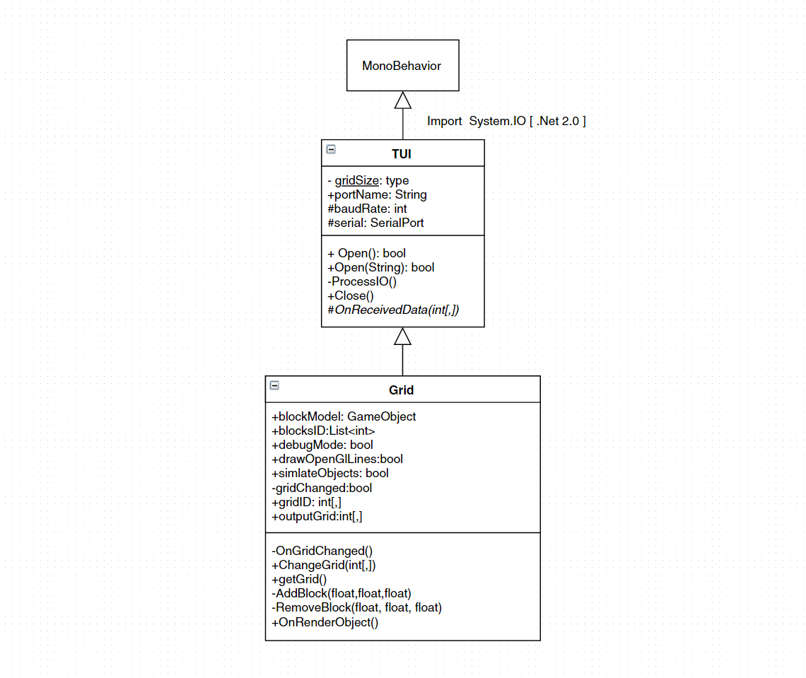
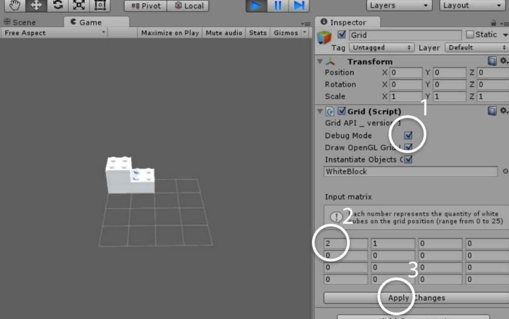

LEGO Digitizer API 1.1
API Documentation for Unity- Lego Digitizer table connection
This API was designed for Prototype 8 table. Developed in August 2015 at MIT-Media Lab - Changing Places group.
Get Started
API Documentation for Unity- Lego Digitizer table connection
Follow the step-by-step bellow to use this API into your unity project:
- Download the unity package (bellow) and import it for your unity (version 4.0+) project;
- After that create a empty game object and name it "grid":
- Drag and drop the "Grid.cs" code into this object. This is going to be the Grid Control of your program;
- Connect the USB cable from the Prototype 8 on your computer, and on the Grid Control define the Port Name variable with the respective serial port name, on windows it will be somthing like "COM 3";
- After that you just need to create an class to interact with the Grid class on the way you want to, as you can see on the Test.cs example bellow:
using UnityEngine;
using System.Collections;
public class Test : MonoBehaviour {
public Grid grid;
void Start ()
{
grid.Open(); //starts connection with table
}
void Update ()
{
int[,] myGrid = grid.getGrid();
if(myGrid[0,0] == 1)
{
//There is one cube on position X=0, Y=0;
}
}
}
It just needs to treat the grid output as an 2D array with the number of blocks on each position
Code Structure
The API requires the .Net 2.0 (no Subset) framework to works, due to the fact it uses System.IO classes to stablish a serial connection. The basis class is called TUI (stands for Tangible User Interface) and handles most of the Serial connection part. Grid is the top level class and the most used for programming with this api.
Make sure you are using .NET 2.0 . To select .NET 2.0 (no Subset) go to: "File > Build Settings > Player Settings > Optimization > API compatiblity level" and select .NET 2.0, reimport all codes related to this API.
Debug Mode
This mode is useful when you do not have a physical table connected with your computer. On this mode the API allows the programmer to simulate the output values from a table.
To use this mode select the option Debug Mode[1] on your Grid Control objetc. you can run the project and change the amount of blocks on each position filling the provided fields [2]. When you finish editing the grid values just click on Apply Changes [3] and the API will update the internal grid variable. Use the top level class Grid as described previously on this page
Make sure you are using .NET 2.0 . To select .NET 2.0 (no Subset) go to: "File > Build Settings > Player Settings > Optimization > API compatiblity level" and select .NET 2.0, reimport all codes related to this API.
Experiments
Unstable experiments made over this API
Contact the Developer
If you need any help or want to give us you can email one of the developers:
cassiano@mit.edu